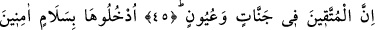
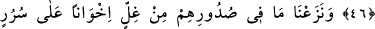
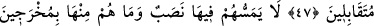
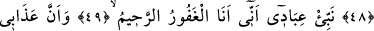
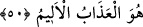

TAKVÂ SAHİBLERİ
CENNETLERDE
45. (Allah’ın azabından korkup rahmetine sığınan) takvâ sâhipleri, mutlaka
cennetlerde ve pınar başlarında olacaklar.
46. “Oraya emniyet ve selâmetle girin” (denilir, onlara).
47. Biz, onların gönüllerindeki kini söküp attık; onlar artık köşkler üzerinde
karşı karşıya oturan kardeşler olacaklar.
48.
Onlara
orada
hiçbir
yorgunluk
gelmeyecek
ve
onlar,
oradan
çıkarılmayacaklardır.
49. (Rasûlüm!) Kullarıma, benim, çok bağışlayıcı ve pek esirgeyici olduğumu
haber ver.
50. Benim azabımın elem verici bir azap olduğunu da bildir.
“Takvâ sâhipleri, mutlaka cennetlerde ve pınar başlarında” oralara yerleşmiş
“olacaklar.”
Takvâ üç çeşittir: Allah’ın emrettiği şeylerle yasakladıklarından/haramlardan
korunma, âhiret ve dereceleri ile dünyâdan ve şehvetlerinden korunma, Allah ve
sıfatları ile Allah dışındaki her şeyden de korunma. Birincisi avâmın, ikincisi havâssın,
üçüncüsü ise ahassın takvâsıdır.
Müttakîlerin her birinin bir bahçesi ve bir pınarı olacak veya pek çok bahçe ve pınarı
olacak. Kâşîfî der ki: “Yâni onlar içlerinde süt, şarap, bal ve sudan çeşmelerin aktığı
bağlarda olacaklar.”
Fakir (Bursevî) şöyle der: Müttakîler, mezkûr yerlere ulaştıracak sebepleri sağlamca
yerine getirdikleri için âyette âhirette yerleşecekleri yerlere dünyâda yerleşmişler gibi
ifâde edilmiştir. Bunun bir benzeri de cehennemliklerden bahseden şu âyettir:
“Yetimlerin mallarını haksız yere yiyenler, karınlarına ateş doldurmaktan başka bir
şey yapmıyorlar.” (en-Nisa, 4/41).